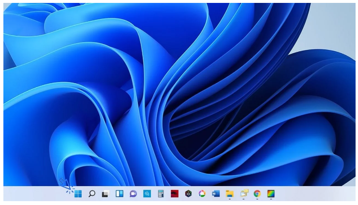
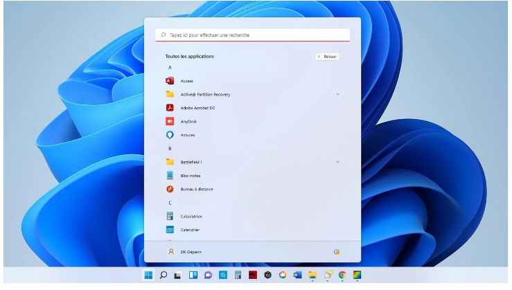
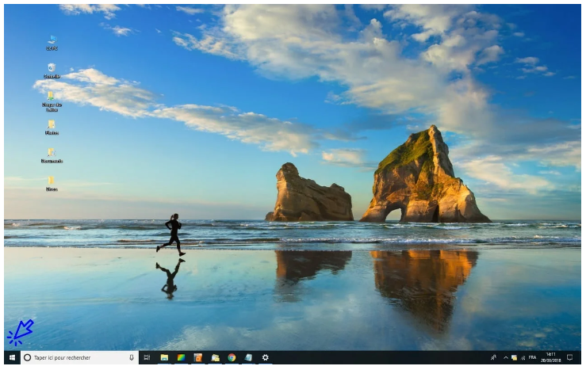

Le menu Démarrer permet d’accéder à de nombreuses fonctionnalités.Il permet d’accéder à l’ensemble des programmes installés sur votre ordinateur, d’accéder aux outils de paramétrage et de configuration de votre matériel, d’atteindre rapidement les dossiers « Mes images » et « Mes documents », de mettre en veille, d’éteindre ou de redémarrer votre ordinateur, ou encore de changer d’utilisateur.
Pour accéder au menu Démarrer, cliquez sur la première icône située sur la barre des tâches, en bas de votre écran. Ou, depuis votre clavier, appuyez sur la touche Windows, représentée par une fenêtre (généralement entre les touches « Ctrl » et « Alt ») :
Le menu Démarrer permet d’accéder facilement à l’ensemble des fonctionnalités de votre ordinateur, à l’exception près de la Corbeille et de l’Explorateur de fichiers qui sont plus faciles d’accès depuis votre bureau. Le menu démarrer est composé de 4 « zones » :
une seconde zone affiche les applications épinglées, que vous pouvez facilement déplacer. Pour voir toutes les applications, cliquez sur « Toutes les applications ». La liste complète des applications présentes dans votre PC s’affiche.
une troisième zone nommée « Nos recommandations » affiche les derniers fichiers ouverts sur le PC. Pour voir plus d’éléments, cliquez sur « Plus ».
enfin, une quatrième zone, en bas, permet de verrouiller la session ou de la déconnecter, en cliquant sur le nom du compte actif. A droite, on trouve les options d’alimentation de Windows pour mettre en veille, redémarrer ou éteindre le PC.
Vue d’ensemble du menu Démarrer de Windows 11
Pour accéder au menu Démarrer, cliquez sur l’icône Windows située dans le coin inférieur gauche de votre écran. Ou, depuis votre clavier, appuyez sur la touche Windows, représentée par une fenêtre (généralement entre les touches « Ctrl » et « Alt ») :
Le menu Démarrer permet d’accéder facilement à l’ensemble des fonctionnalités de votre ordinateur, à l’exception près de la Corbeille et de l’Explorateur de fichiers qui sont plus faciles d’accès depuis votre bureau. Le menu démarrer est composé de 4 parties :
une barre latérale pour éteindre, redémarrer ou mettre en veille l’ordinateur, changer d’utilisateur, verrouiller une session, accéder aux paramètres de Windows ou encore afficher les dossiers « Mes documents » et « Mes images ».
une seconde zone affiche l’ensemble des programmes installés sur votre ordinateur. En haut de cette liste sont affichés les programmes que vous utilisez le plus.
une troisième zone affiche la date, la météo, un accès à Cortana (la recherche vocale de Windows) ainsi que différents raccourcis paramétrables
enfin, une quatrième zone affiche des raccourcis multimédias ainsi qu’un encart d’actualités.